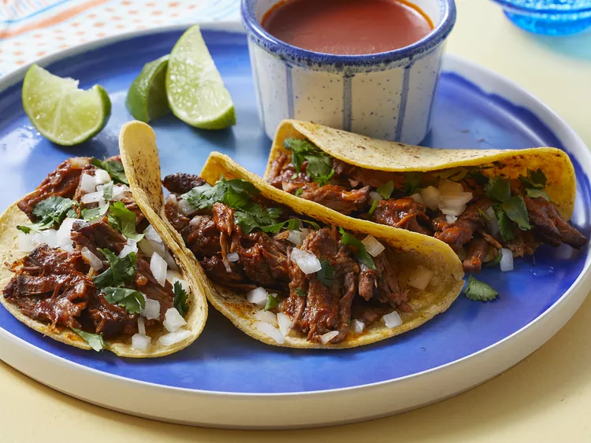

Birria tacos
Tacos with chuck roast style beef

Ingredients
- 6 dried guajillo chile peppers, seeded
- 4 dried chile de arbol peppers, stemmed and seeded
- 2 dried ancho chiles, stemmed and seeded
- 1 tablespoon olive oil, or as needed
- 4 medium Roma tomatoes
- 2 tablespoons white vinegar
- 2 cloves garlic
- 2 teaspoons ground black pepper
- 4 whole cloves
- 1 pinch ground cinnamon
- 1 pinch ground cumin
- 1 pinch ground thyme
- 1 pinch dried marjoram
- 1 pinch dried oregano
- 1 pinch salt
- 4 pounds beef chuck roast
- salt and freshly ground black pepper to taste
- 18 corn tortillas
- 1 large white onion, finely chopped
- 1 bunch fresh cilantro, chopped
- 1 cup shredded queso asadero (white Mexican cheese) (Optional)
Directions
- Gather all ingredients. Preheat the oven to 325 degrees F (165 degrees C).
- Fill a pot with water; bring to a boil. Add guajillo, arbol, and ancho chile peppers; boil for 5 minutes.
- Off heat, allow peppers to soak until cool. Drain; reserve ¼ cup cooking liquid.
- Meanwhile, rinse beef; pat dry with paper towels. Cut beef into chunks if desired; season with salt and black pepper.
- Heat oil in a Dutch oven over medium-high heat. Add beef; cook until browned on all sides, about 10 minutes. Remove from the heat.
- While the beef is searing, line a heavy cast-iron grill pan or griddle with aluminum foil; place over high heat. Arrange tomatoes in a single layer on foil; grill until tomato skins burned on all sides and begins to peel, 3 to 5 minutes.
- Place cooled chile peppers into a blender; add charred tomatoes, vinegar, garlic, 2 teaspoons black pepper, cloves, cinnamon, cumin, thyme, marjoram, oregano, and salt. Pour in reserved ¼ cup cooking liquid; blend until smooth.
- Strain chile sauce through a mesh strainer; pour over browned beef in the Dutch oven, turning until completely covered with sauce. Cover the Dutch oven with a lid.
- Bake in the preheated oven, basting beef every 45 minutes with sauce, until birria begins to fall apart, 3 to 4 hours. Remove the lid; bake, uncovered, until birria is crispy on top, about 20 minutes more. Remove from oven, cover with 2 layers of aluminum foil, and allow to rest in a warm area for 10 minutes.
- Transfer beef to a cutting board; strain off any fat from sauce. Shred beef with two forks; return it to the pot and stir with sauce to coat.
- Fill each tortilla with birria; top with Mexican cheese, chopped onion, and cilantro. Warm tortillas on a griddle, flipping until both sides crispy and cheese is melted.
- Serve with extra sauce on the side for dipping.